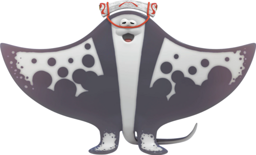
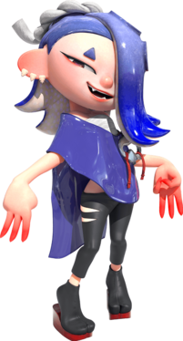
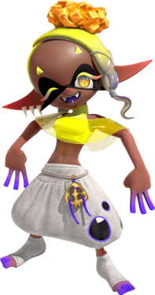

Deep Cut serve similar roles in Splatoon 3 to those of the Squid Sisters and Off the Hook in previous games. They provide updates on the currently available stages and modes and other news and announcements via their television and radio show Anarchy Splatcast. They also host and perform in Splatfests, with Shiver, Frye, and Big Man each representing one of the three teams in every Splatfest.

Big Man (Ian BGM)
Big Man, alias Ian BGM, is one of the three members of the band Deep Cut, alongside Shiver and Frye, with whom he co-hosts both Anarchy Splatcast, the news show of Splatsville, and Splatfests.

Shiver
Shiver Hohojiro is one of the three members of the band Deep Cut, alongside Frye and Big Man, with whom she co-hosts both Anarchy Splatcast, the news show of Splatsville, and Splatfests.

Frye
Frye Onaga is one of the three members of the band Deep Cut, alongside Shiver and Big Man, with whom she co-hosts both Anarchy Splatcast, the news show of Splatsville, and Splatfests.